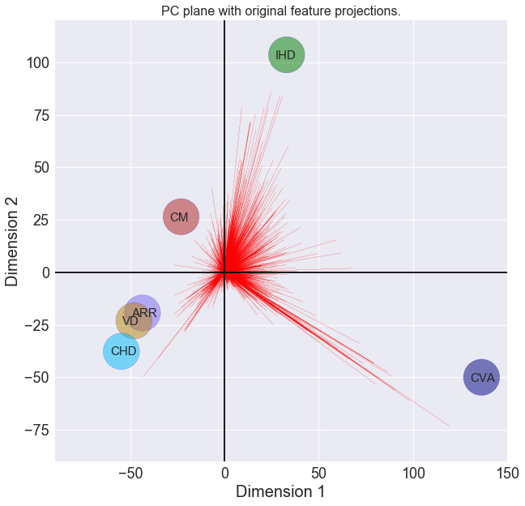
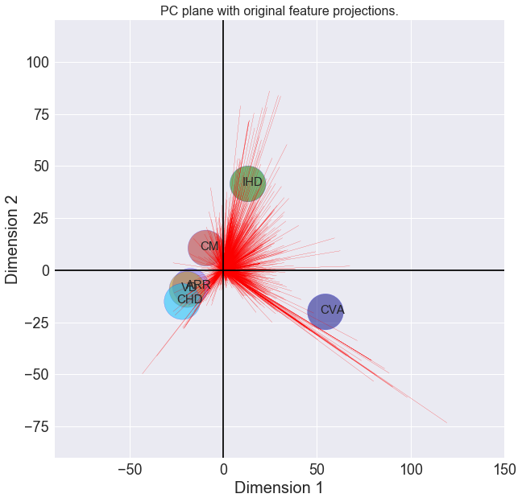

PCA : CVD
import pandas as pd
import numpy as np
import matplotlib.pyplot as plt
import seaborn as sns
%matplotlib inline
import plotly.plotly as py
import plotly.graph_objs as go
import plotly.tools as tls
from sklearn.decomposition import PCA
from scipy.stats import norm
import matplotlib.pyplot as plt
from matplotlib.backends.backend_pdf import PdfPages
from scipy.cluster.hierarchy import dendrogram, linkage
Data
data = pd.read_csv('../datareader/score/score.csv')
data = data.set_index('Protein')
def rearrang(olddf):
col = ['CVA','IHD','CM','ARR','VD','CHD']
newdf = pd.DataFrame()
for t in col:
newdf[t]= olddf[t]
return newdf
ndf = rearrang(data)
ndf.head()
|
CVA |
IHD |
CM |
ARR |
VD |
CHD |
| Protein |
|
|
|
|
|
|
| small_ubiquitin-related_modifier_1 |
0.041144 |
0.012216 |
0.078019 |
0.000000 |
0.000000 |
0.024314 |
| metalloproteinase_inhibitor_4 |
0.042887 |
0.054740 |
0.095265 |
0.045032 |
0.034227 |
0.005072 |
| aromatic-l-amino-acid_decarboxylase |
0.055959 |
0.010260 |
0.011459 |
0.070661 |
0.000000 |
0.007809 |
| nadph_oxidase_activator_1 |
0.035732 |
0.000000 |
0.000000 |
0.000000 |
0.000000 |
0.000000 |
| tumor_necrosis_factor_ligand_superfamily_member_14 |
0.035732 |
0.000000 |
0.000000 |
0.000000 |
0.000000 |
0.000000 |
def feature_norm(df):
dff = df.copy(deep =True)
fchr = ['CVA','IHD','CM','ARR','VD','CHD']
for t in fchr:
dff[t] = (df[t]-df[t].min())/(df[t].max()-df[t].min())
return dff
ndfn = feature_norm(ndf)
ndfn.head()
|
CVA |
IHD |
CM |
ARR |
VD |
CHD |
| Protein |
|
|
|
|
|
|
| small_ubiquitin-related_modifier_1 |
0.059894 |
0.029087 |
0.226948 |
0.000000 |
0.000000 |
0.040827 |
| metalloproteinase_inhibitor_4 |
0.062432 |
0.130334 |
0.277115 |
0.147418 |
0.093665 |
0.008517 |
| aromatic-l-amino-acid_decarboxylase |
0.081461 |
0.024430 |
0.033333 |
0.231319 |
0.000000 |
0.013113 |
| nadph_oxidase_activator_1 |
0.052016 |
0.000000 |
0.000000 |
0.000000 |
0.000000 |
0.000000 |
| tumor_necrosis_factor_ligand_superfamily_member_14 |
0.052016 |
0.000000 |
0.000000 |
0.000000 |
0.000000 |
0.000000 |
Biplot: VCD
cvddata = ndf.copy(deep =True)
# TODO: Apply PCA by fitting the good data with only two dimensions
pca = PCA(n_components =2)
pca.fit(cvddata.T)
# TODO: Transform the good data using the PCA fit above
reduced_data = pca.transform(cvddata.T)
# Create a DataFrame for the reduced data
reduced_data = pd.DataFrame(reduced_data)
|
0 |
1 |
| 0 |
2.729121 |
-1.000078 |
| 1 |
0.659602 |
2.072654 |
| 2 |
-0.460644 |
0.529615 |
| 3 |
-0.871578 |
-0.387538 |
| 4 |
-0.961345 |
-0.462087 |
| 5 |
-1.095155 |
-0.752566 |
def biplot(reduced_data, pca,fname):
names = ['CVA','IHD','CM','ARR','VD','CHD']
clrs =['navy','green','firebrick','mediumslateblue','darkgoldenrod', 'deepskyblue']
fig, ax = plt.subplots(figsize = (10,10))
# scatterplot of the reduced CVDs
ax.scatter(x=reduced_data.loc[:,0]*50,\
y=reduced_data.loc[:,1]*50,
facecolors=clrs,\
edgecolors='b',\
s=2000,\
alpha=0.5)
for i,x,y in zip([0,1,2,3,4,5],reduced_data.loc[:,0]*50,reduced_data.loc[:,1]*50):
ax.annotate(names[i], xy=(x-6.0, y-2.0), xytext=(x-6.0, y-2.0),fontsize = 15)
feature_vectors = pca.components_.T
# we use scaling factors to make the arrows easier to see
asize, tpos = 700, 500,
# projections of the original features
for i, v in enumerate(feature_vectors):
ax.arrow(0, 0, v[0]*asize, v[1]*asize,
head_width=0.01,\
head_length=0.02,\
linewidth=0.1,\
color='red')
plt.axis([-90, 150, -90, 120])
ax.set_xlabel("Dimension 1", fontsize=20)
ax.set_ylabel("Dimension 2", fontsize=20)
ax.set_title("PC plane with original feature projections.", fontsize=16);
plt.axhline(y=0, color='k')
plt.axvline(x=0, color='k')
plt.savefig(fname)
return ax
# Create a biplot
biplot(reduced_data, pca, fname = 'CVD-biplot.pdf')
<matplotlib.axes._subplots.AxesSubplot at 0x7f10760c59b0>

Normalized data PCA
cvddata = ndfn.copy(deep =True)
# TODO: Apply PCA by fitting the good data with only two dimensions
pca = PCA(n_components =2)
pca.fit(cvddata.T)
# TODO: Transform the good data using the PCA fit above
reduced_data = pca.transform(cvddata.T)
# Create a DataFrame for the reduced data
reduced_data = pd.DataFrame(reduced_data)
def nbiplot(reduced_data, pca,fname):
names = ['CVA','IHD','CM','ARR','VD','CHD']
clrs =['navy','green','firebrick','mediumslateblue','darkgoldenrod', 'deepskyblue']
fig, ax = plt.subplots(figsize = (10,10))
# scatterplot of the reduced CVDs
ax.scatter(x=reduced_data.loc[:,0]*20,\
y=reduced_data.loc[:,1]*20,
facecolors=clrs,\
edgecolors='b',\
s=2000,\
alpha=0.5)
for i,x,y in zip([0,1,2,3,4,5],reduced_data.loc[:,0]*20,reduced_data.loc[:,1]*20):
ax.annotate(names[i], xy=(x-3.0, y-1.0), xytext=(x-3.0, y-1.0),fontsize = 15)
feature_vectors = pca.components_.T
# we use scaling factors to make the arrows easier to see
asize, tpos = 700, 500,
# projections of the original features
for i, v in enumerate(feature_vectors):
ax.arrow(0, 0, v[0]*asize, v[1]*asize,
head_width=0.01,\
head_length=0.02,\
linewidth=0.1,\
color='red')
plt.axis([-90, 150, -90, 120])
ax.set_xlabel("Dimension 1", fontsize=20)
ax.set_ylabel("Dimension 2", fontsize=20)
ax.set_title("PC plane with original feature projections.", fontsize=16);
plt.axhline(y=0, color='k')
plt.axvline(x=0, color='k')
plt.savefig(fname)
return ax
# Create a biplot
nbiplot(reduced_data, pca, fname = 'CVD-nbiplot.pdf')
<matplotlib.axes._subplots.AxesSubplot at 0x7f107737d518>
